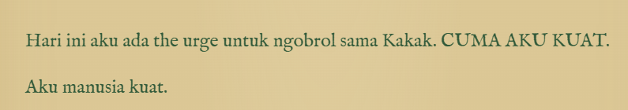
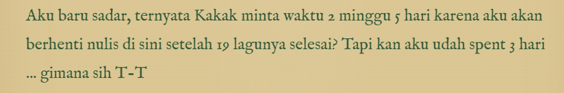

Mind if I drop by your virtual apartment for a bit?
I just wanted to make sure you're having an awesome day. Don't forget to take a break, grab a coffee Central Perk style, and forget about the stressful stuff for a while.
I'll be there for you,
Satrio
(UHUY)
finallehhh kesampean juga saya membuat ala2 blog tandingan Ebi yang maha dahsyat gak tebang aling-aling
jujurrr gue akuinnn, tulisan lo setara Kahlil Gibran zhambouuu
gue suka banget sama cara lo nulis (especially the person behind these words 😭😭😭)
HOW'S YOUR WIKEN GOING, EBI?
kalo dari story yang saya intip sih (kikiki) sepertinya hepi sekaleee tudei 🤍🤍🤍
hm, where do I start? (tiru2 WQOWOQWK)
rekapan kecyil hari Sabtu dulu deh ya wwqokwq hari Sabtu gue gak ngapa2in gilakkk miris bat 🥲
tadinya mau padel tuh jam 8 pagi, diajakin sama om Arif (blio orang baek yang sering ngajakin gue buat bantu jadi score keeper kalo lagi ada turnamen)
tapi kebablasan, bangun2 liat henfon udah jam 9 lewat dikit WQKWQOWKO akhirnya gak jadi olga deh 🥲
tiba2 waktu udah menunjukkan waktu makan siang, karena gue kurang srek sama lauk yang ready kala itu (kayaknya kemaren tuh ikan asin, sama tumis toge kalo gak salah dah)
jadi gue moban ke emak buat dadarin telor aje, dan agak fun fact, emak gue selalu nyetok bumbu kacang enak dibawa dari Purwokerto gitu, jadi ibarat kata ini adalah menu koentji kalo gue lagi gak srek sama lauknya, telor dadar dibalur sama bumbu kacang kane dari PWT wk
eh tapi kemaren lagi pake sambel terasi deng WQKWQOKWOQ soalnya emak gue lagi bikin sambel terasi, bolehlah diadu sama sambel the greatest Mom Yati 🤍
hari pun berjalan lambat, sampai tiba lah ide (muncul jam 20:00 an) "duh gak bisa nihhh, saya uring2annn tidak ada interaksi sama ebi tolonggg"
"gue mau nelfonnn, yaudah lah buat aje page balesan seadanya dulu" eh ternyata saya terlalu kepedean, ternyata si dia gak sekepo saya WQOKWOQKWOQKW
bolak-balik saya refresh page refresh page https://azizahfebriyanti.github.io/greetings/#letter ternyata gak ada update an. singkat cerita, "coba telfon kali ye, barangkali masih bisa ye kan"
sekali telfon, gak diangkat. "mengikuti filosofi 3 kali penolakan si dia, coba sampe 3 kali yee mungkin berlaku juga di telfon ini" WQKWOQKW
EH ALHAMDULILLAH DIANGKAT UYEEE~~~ seketika hariku yang pontennya dari 5/100 langsung melejit ke 13173021730103121030120/100 🚀🚀🚀😋
long story short, i fell for you. eh maap auto corect. oke lanjut, gue kebangun jam 8, dan dibanguninnya sama kinfar wqkwoq sebelumnya gue ada janjian sama novi di Captain galaxy jam 10, soalnya rambut faraz udah lumayan gondrong
eh ternyata Akungnya udah kangen kali, jadilah die yang jemput kinfar pagi2
tibalah sore hari, akhirnya faraz diajak buat cukur rambut. akhirnya faraz cukur di 'pangkas rambut Bandung' namanya, yang tau itu tempat akungnya, jadi gue pergi bertiga tadi
alhamdulillah jadi motong cost banget, yang tadinya mau di Captain harga 70 ribu, eh di pangkas rambut Sunda cuman 20 ribu aje WQOKWOQWKOQ

ayo donggg gak usah kuat aja 😌😌😌 kan AN EVERYDAY CONVERSATION

bukan karena itu kokkk
I miss you too, Ebi. more than I probably let you know.
Have a good night tooo. janlup jangan tinggalin qabliyah subuh 🤍
Manusia paling menyebalkan,
Satrio
under consideration
alias
kelamaan nulis, ini belom keurus
under consideration
alias
kelamaan nulis, ini belom keurus
Kamu itu orang yang spesial. Kayak kata Phoebe tentang Ross dan Rachel, lobster itu bakal gandengan capit terus sampai tua.
Jangan lupa jam 9 malam ini ya! Siapin cemilan dan cerita seru buat diobrolin.
See you on the line!